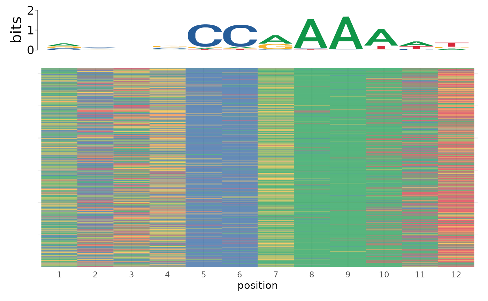
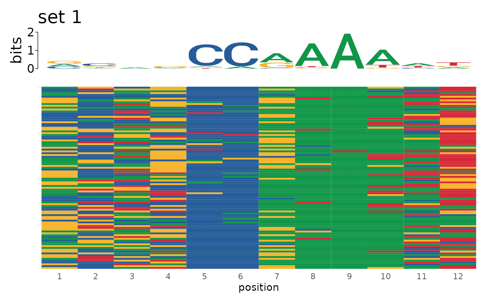
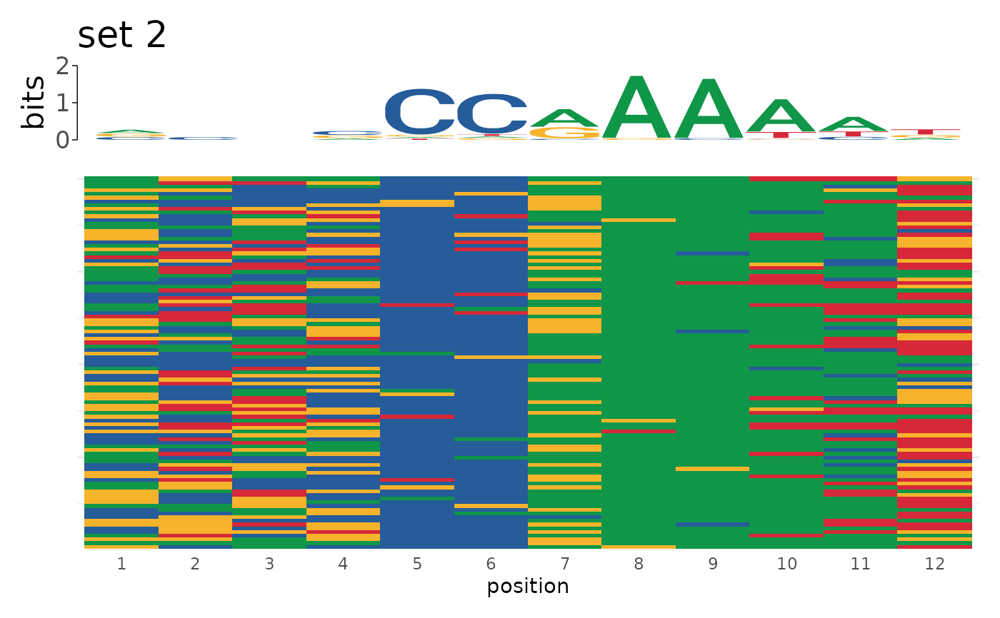
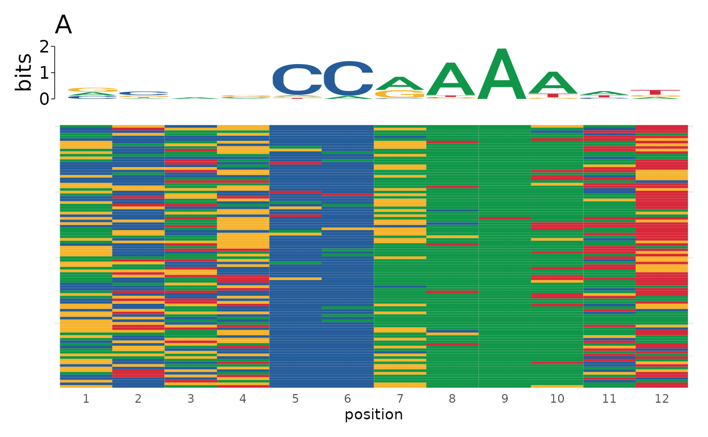
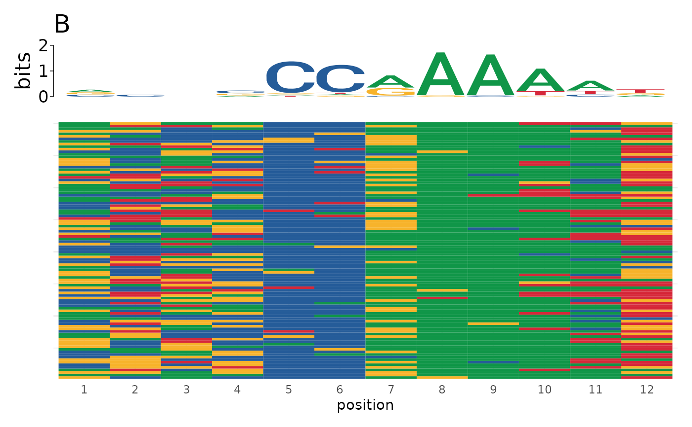

Sometimes it is useful to visualize individual motif matches in aggregate to understand how sequence variability contributes to motif matches. This function creates a heatmap where each row represents a single sequence and each column represents a position. Cells are colored by the sequence at that position. Sequences are optionally aggregated into a sequence logo aligned in register with the heatmap to visualize how sequence variability contributes to motif makeup.
plot_sequence_heatmap(
sequence,
title = NULL,
logo = TRUE,
alph = c("DNA", "RNA", "AA"),
title_hjust = 0,
heights = c(1, 5),
legend = "none"
)| sequence | character vector of sequences, plot will be ranked in order of the sequences. Each sequence must be equal length. Alternately, sequence can be a named list in which case each plot will be titled by the names of the list entries. |
|---|---|
| title | title of the plot. Default: NULL. If sequence is a named list of sequences, title defaults to the list entry names. Set to NULL to override this behavior. To use a different title than the list entry name, pass a vector of names to `title`. |
| logo | whether to include a sequence logo above the heatmap |
| alph | alphabet colorscheme to use. One of: DNA, RNA, AA. |
| title_hjust | value from 0 to 1 determining the horizontal justification of the title. Default: 0. |
| heights | ratio of logo:heatmap heights. Given as: c(logo_height, heatmap_height). Values are not absolute. Ignored when logo = FALSE. |
| legend | passed to ggplot2::theme(legend.position). Default: "none". Values can be: "none", "left", "right", "top", "bottom", or coordinates in c(x,y) format. |
a ggplot object of the sequence heatmap ranked by the order of sequences
runFimo
data(example_fimo, package = "memes")
genome <- BSgenome.Dmelanogaster.UCSC.dm3::BSgenome.Dmelanogaster.UCSC.dm3
motifs <- add_sequence(example_fimo, genome)
plot_sequence_heatmap(motifs$sequence)

# Use on named list
sequences <- list("set 1" = motifs$sequence[1:100],
"set 2" = motifs$sequence[101:200])
plot_sequence_heatmap(sequences)
#> $`set 1`

#>
#> $`set 2`

#>
# Use different titles for list input
plot_sequence_heatmap(sequences, title = c("A", "B"))
#> $`set 1`

#>
#> $`set 2`

#>